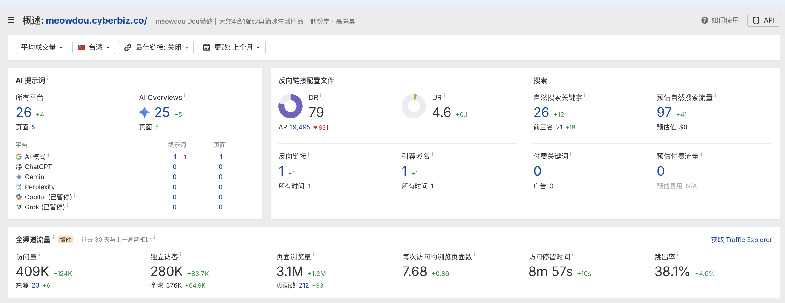

讓好產品，成為搜尋與 AI 願意引用的答案
從品牌信任、內容佈局，到能被找到、看懂、比較並走向購買的長期入口。
瑪卡鎷網路行銷｜2026.11


Dou 已經有產品、有內容；下一步是把能見度接回「被選擇」的路
產品有辨識度
木薯、豆腐、礦砂、活性碳的四合一混合砂，已有清楚的產品故事。
內容已有起點
Ahrefs 子網域匯出已找到 26 組排名字，代表文章有被搜尋系統理解的基礎。
排名還沒接回貓砂
26 組字中沒有一組含「貓砂」；目前主要是貓咪磨蹭、踩奶與照護題。
消費者不只點十個藍色連結，也直接問 AI：「哪種貓砂適合我？」
品牌需要同時準備三個入口，但背後不是三套孤立工作。
SEO、GEO、AIO 的共同底層：可理解、可驗證、可連結
明確回答
一頁聚焦一個問題，先回答，再補脈絡。
實體一致
品牌名、產品名、成分、規格與說法一致。
證據可追
檢驗、使用方式與限制有明確來源。
網站可讀
技術、內部連結與結構讓搜尋系統容易理解。
Google 的官方說明也指出，AI 搜尋仍建立在既有 SEO 基礎上，沒有一個能保證被 AI 引用的特殊捷徑。
把關鍵字、品牌語言與購買理由，變成同一套內容系統
IG 廣告買的是當下注意；搜尋內容累積的是持續被找到的入口
社群廣告
- 主動打斷使用者注意
- 適合新品、活動與知名度
- 停投後，曝光通常快速下降
- 需要創意、受眾與追蹤持續優化
SEO／AI 搜尋內容
- 承接使用者主動提出的問題
- 適合比較、教育與信任建立
- 內容可隨時間累積曝光與連結
- 需要時間發酵，也需要持續更新
貓砂不是「看到可愛就買」：消費者先過五道風險判斷
安全與檢驗
不能只寫「有 SGS」，要讓讀者知道檢驗的是什麼、報告何時、如何對應產品。
適配與限制
清楚說明適合誰、不適合誰、怎麼換砂，以及本產品使用後不建議沖馬桶。
已經有搜尋起點，但還沒站上貓砂選購的主戰場

搜尋量、預估流量、實際點擊，是三個不同問題
Search Volume
CSV 中每組關鍵字的月搜尋需求估計，用來看市場題目大小。
Ahrefs Organic Traffic
圖上 97 是依排名、搜尋量與點擊率模型推估的自然流量，不是關鍵字搜尋量。
Google Search Console
實際曝光、點擊、CTR 與平均排名；合作後用它作為成效追蹤基準。
市場需求已經在搜；Dou 現在還沒有用「貓砂」接住它
資料：2026-11-24，台灣；月均搜尋量及競爭指數。搜尋量用來比較市場需求，不等於 Dou 可獲得的流量。
工程師寫得有內容；我們補上搜尋目的、閱讀路徑與轉換


保留專業，重寫入口
標題與前段先回答搜尋問題，避免重要資訊藏得太深。
一篇一個主意圖
把相似文章分工，降低彼此競爭，讓頁面角色更清楚。
補上內部導流
從知識頁走向比較頁、商品頁與使用說明，而不是讀完就離開。
一致品牌實體
統一 MeowDou／Dou／產品名稱與成分表述，提升辨識與引用穩定度。
不從「我們的貓砂多厲害」開始，從飼主正在煩惱的那一刻開始
四合一混合貓砂的 5 大優點
容易變成自說自話，也難回應不同家庭的真實條件。
小套房最怕貓砂味？先分清「吸附、掩蓋、清理頻率」三件事
先解釋問題，再把木薯、豆腐、礦砂、活性碳的角色放進選擇框架。
每篇文章都要知道：讀者下一步去哪裡
內部連結
不是「延伸閱讀」四個字，而是用問題承接下一步。
情境 CTA
依文章意圖決定導向比較、FAQ 或購買，不全塞同一顆按鈕。
內容更新
排名、產品與使用問題改變時，內容跟著更新，不把文章當一次性交付。
成效不是一個總數；要看曝光與點擊怎麼隨時間累積
兩條線各自使用對應尺度，用來看趨勢，不直接比高度。排除不完整的首尾月。
總計區間：2025/07/05–2026/11/04，來源為公開案例 GSC 數據。案例不代表 Dou 必然取得相同結果。
高流量不只來自「產品字」，生活問題也能成為品牌入口
〈貓咪會跟你睡嗎？〉
公開案例中的代表文章，平均排名 4.12、CTR 5.24%。它證明生活題有機會擴大觸及，也提醒我們必須另外設計回到品牌與產品的路。
「緬因貓」不是一次性上榜，而是可核對的長期搜尋位置
「緬因貓」平均排名
兩系列各自使用對應尺度；排除不完整月。
把內容生產變成固定節奏，不增加工程團隊的猜題成本
Dou 提供
產品資料、檢驗證據、常見客服問題、不可說與必須說的品牌原則。
瑪卡鎷負責
關鍵字佈局、搜尋架構、內容製作、頁面優化建議與成效追蹤。
不只看排名；我們看「被看見 → 被點擊 → 被理解 → 被選擇」
能見度
曝光、有效關鍵字數、目標主題排名。
吸引力
點擊、CTR、搜尋結果標題與摘要表現。
內容力
文章流量、內部導流、更新後成長。
商業訊號
商品頁進站、詢問、購買與可追蹤轉換。
三種投入節奏，不預選；依目標、時間與內容量一起決定
文章完成節奏原則為啟動後每月一篇，直至方案總篇數完成；正式時程依關鍵字與審稿流程確認。稅務口徑於合約確認。
先選擇想討論的合作節奏，再把關鍵字地圖做成可簽約的版本
瑪卡鎷網路行銷｜讓內容成為品牌被找到、被相信、被選擇的長期入口。